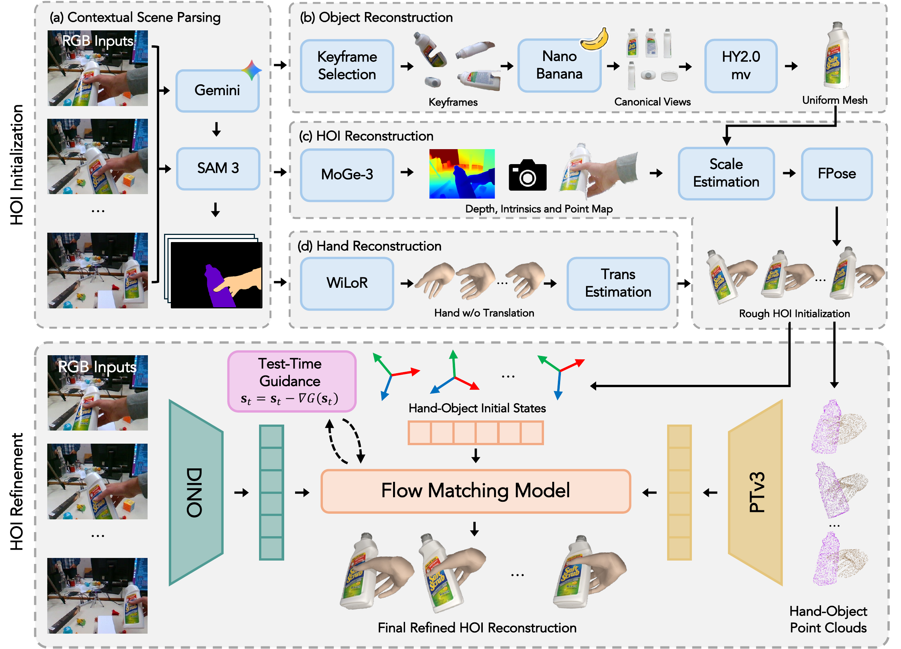

Interaction, from every angle.
Drag to rotate · Scroll or pinch to zoom
Abstract
Existing methods for 4D hand-object reconstruction often rely on costly per-sequence optimization, while generative approaches typically synthesize interactions from random noise, which can lead to unstable interaction prediction. We introduce 4D-HOF, a feed-forward framework that reconstructs 4D hand-object interactions from coarse but informative estimates produced by vision foundation models. Concretely, we learn a conditional flow matching model that transports foundation-model-derived hand-object states toward an interaction manifold, allowing the model to correct errors in translation, rotation, and alignment in a feed-forward manner. A key advantage of our generative formulation is that it naturally enables test-time guidance within the transport process. Rather than applying a separate post-hoc optimization after reconstruction, we directly steer the evolving generative states using physical interaction constraints and observed 2D evidence, allowing the reconstruction to be refined as part of the generative process itself. By training the generative model on diverse datasets, 4D-HOF generalizes robustly to challenging in-the-wild scenarios. Experiments on out-of-domain benchmarks show that 4D-HOF achieves state-of-the-art performance, producing more stable and accurate 4D hand-object reconstructions.
Method overview

Qualitative comparison
Same sequence. Different methods.
Explore geometry and image alignment side by side.
All available methods share playback controls. Reconstruction and overlay clips are shown at their original lengths.
GPT-6 Astra Ultra vs. 4D-HOF
For this experiment, we used GPT-6 Astra Ultra. A single run consumed approximately 35% of the weekly usage allowance on a $100 subscription.
@article{li2026_4dhof,
title = {4D-HOF: Hand-Object Flow Matching for Feed-Forward 4D Interaction Reconstruction},
author = {Li, Shiqi and Cho, Sean and Li, Yijie and Guo, Fengzhi and Wen, Bowen and Zhang, Cheng},
journal = {arXiv preprint arXiv:2610.08782},
year = {2026}
}